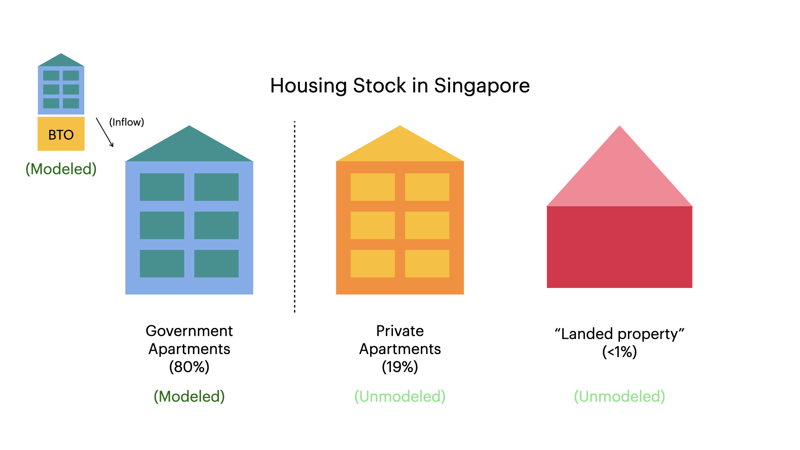
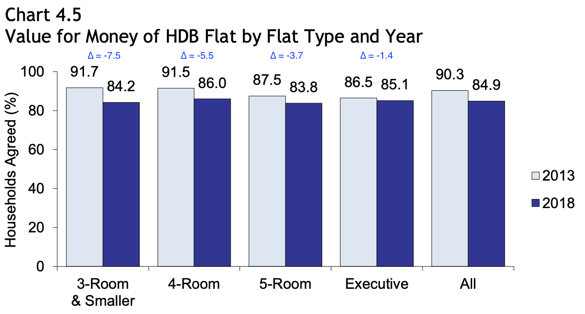
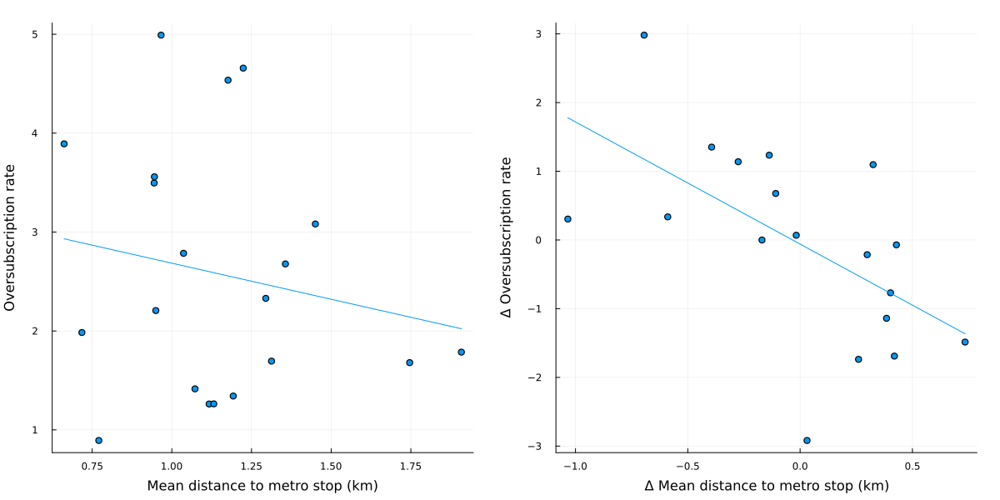
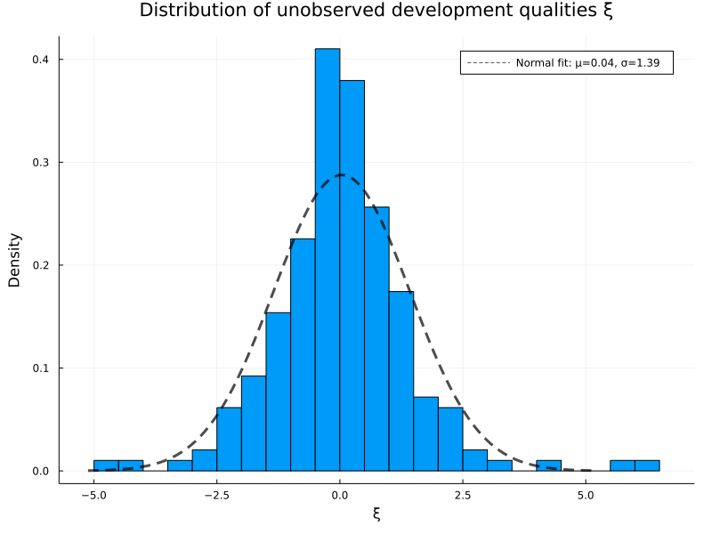
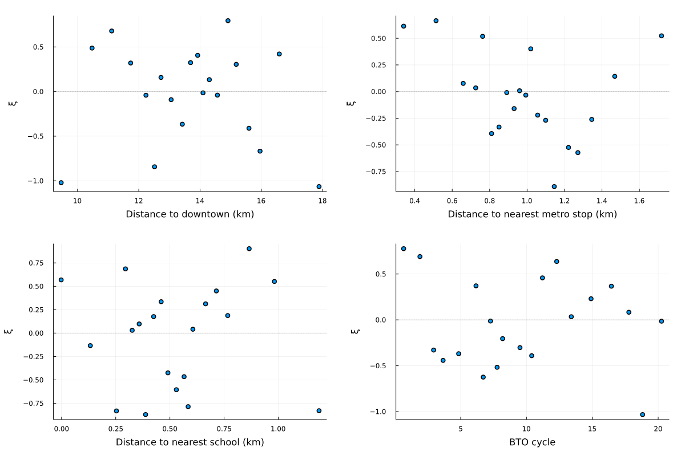

The dynamic allocation of public housing: Policy and spillovers
Kwok-Hao Lee
(with Andrew Ferdowsian and Luther Yap)
Created: 2022-08-29 Mon 12:17
1. Introduction
1.1. Who am I?

1.2. Motivation
We study the design of a large-scale public housing program
- Covering 80% of residents in a developed country (Singapore)
- Similar to those in major European and Asian cities
Because of limited land and funding, housing assistance is rationed.
- The government builds (public) housing
- sold below market prices
- possibly resold on a regulated aftermarket
- rationed by quarterly lottery over each applicant's top choice
- to achieve social objectives
1.3. Research questions
- What are the effects of changing allocation rules for public housing?
- "… we need to manage the building programme carefully, including allocating new flats in a fair, cost-effective and efficient way." (Mah 2011, 29)
- Examples include: Pick one; rank-ordered list…
- What are the effects of building slightly more?
- What are the impacts on wait times and prices on the aftermarket?
- "By 2014… first-time homeowners were counseled publicly to… wait for the new supply… Levies… deter[ed] property [speculation]." (Chua 2017, 92–93)
1.4. Agenda
- Introduce the setting and provide descriptive analysis
- Build dynamic structural model of (new) public housing allocation
- Estimate on novel data from the Singaporean mechanism
- Key challenge: endogenous lottery odds and 2\(^{\circ} \) market prices
- Evaluate rule changes and building more
Agenda (detailed)
- Introduce the setting and provide descriptive analysis
- Build dynamic structural model of (new) public housing allocation
- Young households observe developments, then choose: apply to one, wait, or
buy off 2\(^{\circ} \) market
- Choice depends on characteristics, odds, and prices (1\(^{\circ} \), 2\(^{\circ} \))
- 2\(^{\circ} \) apartment owners observe prices, then decide whether to sell
- Markets clear by odds (1\(^{\circ} \)) and prices (2\(^{\circ} \))
- Young households observe developments, then choose: apply to one, wait, or
buy off 2\(^{\circ} \) market
- Estimate on novel data from the Singaporean mechanism
- Key challenge: endogenous lottery odds and 2\(^{\circ} \) market prices
- Estimate dynamic demand (NFXP-GMM) and 2\(^{\circ} \) market supply (Euler CCP)
- Strategy: Cost shifters + policy changes
- Evaluate rule changes and building more
1.5. Preview of results
1. Changing allocation rules for public housing…
- … generates spillovers in other markets
- Inefficiency: Waiting can be rational
A strategyproof mechanism eliminating intertemporal risk…
- reduces vacancies (12% \( \to \) 7%)
- makes poor/rich households wait 8%/23% less
- raises prices on the secondary market (>12%)
- advantages owner-occupiers over applicants
2. … vis-à-vis building slightly more (10%)?
- Expanding supply raises vacancies (12% \( \to \) 16%)
- Rich wait 3% less (1.3 weeks); no change for poor
- Little price movement on 2\(^{\circ} \) market
- …except when combined with changing rules
- Vacancies fall (12% \( \to \) 10%)
- Relieves upward pressure on secondary market prices
Contributions
Evaluate efficiency and spillovers of a large housing assistance program.
- Evaluate rule changes against a supply increase in housing market design
- Captures dynamic tradeoffs between waiting and applying to public housing
- Combines endogenous "success probabilities" and equilibrium prices on the secondary market
2. Setting
2.1. Historical context
80% of Singaporean households live in government housing
- 2021: 1.1m apartments, est. value S$440b
Build-to-order (BTO) mechanism, new government apartments (2001-today)
- S$6.3b/year (US$4.7b/year)
- Administered by the Housing and Development Board (HDB, 1960-today)
- "Sells" 99-year leases to households assigned new apartments
- Intermediates resale on (after)market
Government objective: Provide "affordable, quality public housing option"
- Encourage homeownership
- "Affordable": \( \leq \) 4x applicant yearly income
- Minimize vacancies
- Ensure economic and racial integration, family formation…
Eligibility for the mechanism
Applicants apply for BTO as a family unit (typically a married couple)
- One must be a Singapore citizen; the other a citizen/PR
- Both aged \( \geq \) 21 years
- Do not own real estate in Singapore or overseas
- Income \( \leq \) S$144,000 a year (60th percentile)
Priority: Focus on "first-timers."
- 95% of apartments in desirable neighborhoods reserved for them
Subsidies and apartment types
- Unit of analysis: Housing development, (location, apartment size) pair
- Apartment types
- 3(4)-room: 2(3) bedrooms, 1 living room
- 5-room: 3 bedrooms, 1 living room, 1 dining room
- Subsidies
- Explicit: "Discount" on apartment conditional on income
- Implicit: "Sticker price" < Price of comparable resale units
Historical context (comparison)
| Characteristic/Settings | Singapore (+ Israel, Brazil, …) | United States (e.g. NYCHA) |
|---|---|---|
| Lease type | Owner-occupation | Rental |
| Lease tenure | \( \geq \) 99 years | 1-2 years |
| Lease transferable? | Yes, after min term (SGP, ISR: 5 yrs) | No |
| Applicant wealth | Low to moderate | Low |
| Transfer type | Income-specific subsidy + | Direct rent control/ |
| Discount from "resale price" | Voucher (for rent > 40% AGI) | |
| Allocation mechanism | Centralized assignment, lottery | Waitlist |
| Application cycles | Periodic (SGP: Quarterly) | Continuous (FIFO) |
| # Choices per app | 1 | > 1 |
2.2. The Singaporean housing market

Location of BTO developments

Within a period…

- Cannot participate if I already have a house
Housing affordable for the poor?

2.3. Time dependence

3. Illustrative model
3.1. Illustrative model of housing choice
- Players: \( i = 1, 2, 3 \)
- Houses: \( j = A, B \)
- House A (B) arrives in Period 1 (2)
- Payoff: \( u(A) = 2, u(B) = 5 \)
- If houses are short, allocate by uniform random lottery
- Timing: \( t = 1, 2 \). In each period, each agent can
- Apply to the house on offer (terminal if matched)
- Wait
- Exit the market (terminal)
- Other payoffs:
- If unmatched between Periods 1 and 2, incur small waiting cost \( -\epsilon \)
- If unmatched after Period 2, exit
- Exit: \( u(E_1) = -2, \; u(E_2) = -1 \)
Benchmark equilibrium
Induct backwards.
- Conjecture: Everyone applies to A, then to B.
- Start of Period 2: Suppose 2 households unmatched.
- Strictly dominant to apply
- Expected utility: \( V_2(2) = 0.5 \times 5 + 0.5 \times (-1) = 2 \)
- Start of Period 1: Everyone applies to A.
- \( v_1(a, -a) = \frac{1}{3} \times 2 + \frac{2}{3} \times (-\epsilon + V_2(2)) = 2 - \frac{2}{3}\epsilon.\)
- \( v_1(w, -a) = 2 - \epsilon < v_1(a, -a). \)
- Allocation: Some permutation of \( x = (A, B, \emptyset) \)
Building 1 more "B" may not help…
Suppose the government built one more "B" house.
- New equilibrium: Everyone waits then applies for B
- \( \tilde V_2(3) = \frac{2}{3} \times 5 + \frac{1}{3} \times (-1) = 3 \)
- In Period 1, suppose everyone waits.
- \( \tilde v_1(w, -w) = 3 - \epsilon \)
- \( \tilde v_1(a, -w) = 2 < \tilde v_1(w, -w) \)
- Allocation: Some permutation of \( x = (B, B, \emptyset) \)
- Average wait times rise (no one applies for A)
- Vacancies rise
- Takeaways:
- Ex post regret
- Intertemporal substitution
… unless we "fix" the rules
Suppose the government
- Built one more "B" house.
- Changed the rules: Everyone ranks \( \{A, B, \text{exit}\} \)
Then
- Everyone submits \( B \succ A \succ \text{exit} \).
- Allocation: Some permutation of \( x = (A, B, B) \)
- Everyone is matched!
- (Full model: \( 2^{\circ} \) market; heterogeneous preferences)
4. Model: Outline
Needed to predict equilibrium effects of rule changes and added supply on lottery odds and aftermarket prices.
4.1. Dynamic equilibrium model of housing choice
Every period, new housing developments arrive exogenously.
Existing owner-occupiers
- Infinite horizon, perfect foresight through 2022
- Given the prices they face, either
- Sell off their apartment (terminal); or
- Continue living in it
- Key trade-off: Sell today vs. sell at higher price tomorrow
Young households
- Poor and rich, finitely-lived, perfect foresight
- Given prefs, prices and odds of success over developments, either
- Apply for one development within the mechanism;
- Wait (live with family); or
- Exit to secondary market
- Key trade-off: Success odds vs. desirability
Markets clear via lottery odds (1\(^{\circ} \)) and prices (2\(^{\circ} \))
Endogenous objects
- In each period, the income and age composition of the searchers
- At each development, the probability that a searcher succeeds
- On the aftermarket, the mean sale price
- For each new apartment, its 5-year-ahead resale price
Frictions
- "Sticker prices" below static market clearing level
- Rational delay, leading to vacancies
5. Model: Details
5.1. Model — Supply
- Assume the PHA's development locations and quantities are fixed.
- Each period, an owner-occupier decides whether or not to sell off her
apartment.
- If she sells, she exits the game
- If she doesn't sell, she continues to the next period
Secondary market supply equations
- Every quarter: owner-occupier decides whether to sell off her apartment
- Indirect utility from selling is \[ w_{i1t|l} = \rho_0 \bar p^S_{t|l} + x_{1t|l}'\rho_1 + \xi_{1t|l} + \epsilon_{i1t|l} \]
- Indirect utility from staying is \[ w_{i0t|l} = \delta^o \mathbb{E}V^o_{it+1|l} + \xi_{0t|l} + \epsilon_{i0t|l} \]
Secondary market shares
- Market share of sellers of size \( l \) at time \( t \) is \[ s_{1t|l}(\bar p^S_{t|l}) = \frac{\exp[\bar w_{1t|l}(\bar p^S_{t|l})]}{\exp[\bar w_{0t|l}(\bar p^S_{t|l})] + \exp[\bar w_{1t|l}(\bar p^S_{t|l})]} \]
- Supply of secondary market housing is \[ S(\vec{p}^S_t) = \int s_{1t|l}(\bar p^S_{t|l}) \, d\lambda_t(l), \] where \( \lambda_t(l) \) is the housing stock of type \( l \) apartments at time \( t \).
5.2. Model — Demand (Timing)
Cannot participate if I already own a house.
(Details below…)
5.3. Model — Demand (Preferences)
Every period, a fixed number of poor and rich agents (800:3200) become active in the mechanism.
Specify model backwards.
Terminal payoffs
Utility of matched households
- BTO apartment \( a \): \[ U_t(a; y) = {x_{at}}'\beta^y - \alpha^y p^y_{at} + \alpha^{Ry} p^R_{at} + \xi_{at} \]
- Apartment on secondary market: \[ U_t(E; y) = -\alpha^y \bar p^S_t + \xi^S_t \]
Flow utility of unmatched households
- If unmatched/waiting, pay waiting cost (utils: \( c^y \))
- Payoff from being unmatched: \[ U_t(0; y, \tau) = -c^y + \delta V_{t+1}(y, \tau+1) \]
Choice-specific value functions
- BTO apartment \( a \): \[ v_{it}(a; y, \tau) = q_{at} U_t(a; y) + (1-q_{at})U_t(0; y, \tau) + \epsilon_{iat} \]
- Apartment on secondary market: \[ v_{it}(E; y) = U_t(E; y) + \epsilon^E_{it} \]
- Wait one period: \[ v_{it}(W; y, \tau) = \xi^y_{Wt} + U_t(0; y, \tau) + \epsilon^W_{it}. \]
Household decision problem
- If unmatched, decides optimally: \[ V_t(y, \tau) = \mathbb{E}\left\{\max_{d \in \mathcal{A}_t \cup \{E, W\}} \mathbb{E}_t[v_{it}(d; y, \tau) | d, \mu_t]\right\} \]
- Possible actions:
- \( d \in \mathcal{A}_t \): apply to BTO apartment \( d \)
- \( d = E \): take apartment on secondary market
- \( d = W \): wait one period
Transition rules
BTO applicants to apartment \( a \)
\( \stackrel{(q_{at})}{\swarrow} \)
Matched to \( a \)
\( \stackrel{(1-q_{at})}{\searrow} \)
Unmatched
Households taking non-BTO apartment
\( \downarrow \)
Exit the mechanism
Waiting households
\( \downarrow \)
Waiting, remain unmatched next period
Market shares
- Market share of BTO apartment \( a \) at time \( t \): \[ s_{at} = M_t^{-1}
\int \frac{\exp(\bar v_{it}(a; y, \tau))}{\exp(\bar v_{it}(E; y)) + \exp(\bar
v_{it}(W; y, \tau)) + \sum_{j \in \mathcal{A}_t} \exp(\bar v_{it}(j; y,
\tau))} \, d\mu_t \]
- Market size \( M_t \triangleq \int \, d\mu_t \)
5.4. Model — Equilibrium
In equilibrium,
- [Young households apply/wait/exit optimally]
- [Owner-occupiers sell/remain optimally]
- [Success probabilities in the mechanism are consistent]
- [Secondary market prices set demand equal to supply]
6. Estimation: Outline
6.1. Data and where we are headed
Want to recover…
- young household preferences and wait costs (demand) and
- how likely existing homeowners move when home prices rise (supply).
… with novel Singaporean data covering the universe of public housing transactions
- Mechanism (scraped): 195 developments over 20 periods (2012-2015)
- Application rates, prices and quantities and nearby amenities
- Secondary market (data.gov.sg): 570,000 transactions over 20 years (2000-2020)
- Month/year transacted, location, price, year built
Supply estimation: Brief
Secondary Market Supply: Price sensitivities recovered via IV-FE regression (Euler CCP; Kalouptsidi, Scott and Souza-Rodrigues 2021)
- Key assumption: Owner-occupier exits after selling off her apartment
- Identification: \( \Delta \) market shares and prices by apartment type over time
- Instruments: Changes to BTO subsidies (2015, 2019) + Unanticipated LTV restriction (2018)
Demand estimation: Brief
Demand: Young household preferences recovered via GMM ("Dynamic BLP", e.g. Gowrisankaran and Rysman 2012)
- Identification: Every period, applicants face different "menus" of
developments
- Poor also face different prices from rich (explicit subsidies)
- Instruments: Granite costs + Stamp duty shock (2013) + Differentiation IV (Gandhi and Houde 2021)
7. Estimation: Details
7.1. Supply estimation: Outline
Want to recover how sensitive each household's moving decision is to changes in their apartment's price.
- IV-FE regression over each (neighborhood, apartment size) pair (Euler CCP;
Kalouptsidi, Scott and Souza-Rodrigues 2021)
- Avoids repeatedly iterating value functions
- Endogeneity: Price is correlated with unobservables affecting willingness to sell
- Instruments: Demand shocks
- Expansion of eligibility for BTO (2015, 2019)
- Tightening of Loan-to-Value limits (2018)
- Identification: \( \Delta \) market shares and prices by apartment type over time
- Results: Elasticity of 3.64 (se: 1.59)
- Higher than new construction (1.75; Saiz 2010) and housing unit provision (0.3; Baum-Snow and Lu 2021)
Supply estimation: Hotz-Miller inversion
By a Hotz-Miller (1993) inversion, the relative attractiveness of selling vs. staying is \[ \Delta_{1,0} \ln s_{t|l} = \Delta_{1,0} \bar w_{t|l} = \rho_0 \bar p^S_{t|l} + x_{1t|l}'\rho_1 + \Delta_{1,0} \xi_{t|l} - \delta^o \mathbb{E}V^o_{t+1|l}.\]
- Selling is a terminal action (Arcidiacono and Miller 2011)
- \( \mathbb{E}V^o_{t+1|l} = \gamma^E + \rho_0 \bar p^o_{t+1|l} + x_{1t+1|l}'\rho_1 + \xi_{1t+1|l} - \ln s_{1t+1|l} \)
Identification — Dynamic Supply
- Mean resale prices \( \bar p^S_{t|l} \) possibly correlated with composite
unobservable \( \tilde \xi_{t|l} \).
- E.g. Work from home trend: agents in larger apartments less likely to vacate, driving prices up but lowering fraction of sellers
- Instrument with (demand-side) policy shocks in 08/2015, 07/2018 and 08/2019.
- The government unexpectedly
- (2015, 2019) raised subsidies + expanded eligibility for BTO
- (2018) tightened Loan-to-Value limits
- Plausibly uncorrelated with period unobservable factors that influence the probability of sale
- The government unexpectedly
Results — Dynamic Supply
res_s = reg(drf, @formula(y ~ (p_adj ~ post2015 + absd2018 + post2019) + fe(flat_type) + fe(town)), Vcov.robust(), save=:fe) IV Fixed Effect Model =============================================================== Number of obs: 4843 Degrees of freedom: 30 R2: -0.171 R2 Adjusted: -0.178 F-Stat: 5.26299 p-value: 0.022 F-Stat (First Stage): 11.9648 p-value (First Stage): 0.000 R2 within: -0.172 Iterations: 5 =============================================================== y | Estimate Std.Error t value Pr(>|t|) Lower 95% Upper 95% --------------------------------------------------------------- p_adj | 0.711783 0.310264 2.29412 0.022 0.103524 1.32004 ===============================================================
Assume discount factor of 0.96 per year
- Mean elasticity: 3.64
- Higher than new construction (1.75; Saiz 2010) and housing unit provision (0.3; Baum-Snow and Lu 2021)
7.2. Demand estimation: Outline
Young household preferences recovered via two-step optimal GMM ("Dynamic BLP", e.g. Gowrisankaran and Rysman 2012)
- For intuition: Suppose \( |\mathcal{Y}|=1, \bar\tau = 1 \).
- "Invert" market shares to mean utilities
- Regress mean utilities on covariates; residuals \( \xi_{at} \)
- Exogeneity: \( \mathbb{E}[x_{at}\xi_{at}] = 0 \)
Moment conditions: \( \mathbb{E}[z_{at}\xi_{at}(\theta)] = 0 \)
- Unobserved development qualities \( \xi_{at}(\theta) \) set predicted market shares equal to observed shares…
- … Iterate value functions to convergence
Assumptions on primitives
- Income distribution: Poor/rich, 20%/80% of entrants
- Poor: First-married h/h with secondary education or less
- Heterogeneity of preferences: In price sensitivities \( \alpha^y \) and wait costs \( c^y \)
- Discount factor: \( \delta = 0.96 \) annually
Agent birth-death process
- Share of exiters: 30% of resale market volume
- Number of entrants in each period: 800 poor, 3,200 rich
- Assume: Gov builds housing at rate at which new agents enter
- Market size: 3-year rolling window of first-married resident h/h
- Initialize 16k households, 20% poor, decaying exponentially
- Augment data to get Period 1 type distribution
7.3. Demand estimation: Endogeneity and identification
Exclusion restriction: \( \mathbb{E}[z_{at} \xi_{at}(\theta)] = 0 \)
- Threats to identification: Endogenous prices and market shares
- Unobserved local amenities
- Unobserved building amenities
Instruments and identifying variation
Instruments
- Cost shifters: E.g. price of granite x apartment size
- Supply shock in January 2013: Higher stamp duties
- Differentiation IVs (Gandhi and Houde 2021)
Identifying variation
- Taste for development characteristics: Within a period/across time,
developments vary in observables and market shares
- Poor also face different prices from rich (explicit subsidies)
- Identifies type-specific coefficients in indirect utilities
- Wait costs: Across periods, applicants face different choice sets
- Not all neighborhoods are available each period
7.4. Demand estimation: Interpretable results
| (Dis)Amenity/Value (S$) | Poor | Rich |
|---|---|---|
| Living 100m closer to… | ||
| \( \quad \)Downtown | 400 | 1,600 |
| (200) | (400) | |
| \( \quad \)Subway Stop | 2,100 | 8,500 |
| (1,000) | (2,500) | |
| Wait cost (per person per month) | 9,600 | 50,900 |
| (5,400) | (18,400) |
Other coefficients: distance to SAP school, apartment size, price (by income), forward resale price
Full results
| Parameters | Estimate | S.E. |
|---|---|---|
| Constant | -2.698*** | 1.050 |
| Distance to downtown | -0.143*** | 0.0470 |
| Distance to metro stop | -0.729*** | 0.163 |
| Distance to SAP school | 0.0291 | 0.0389 |
| 4-room flat | 1.987*** | 0.305 |
| 5-room flat | 1.426*** | 0.499 |
| Price | -0.855*** | 0.291 |
| Resale price | 0.569** | 0.232 |
| Subsidized development price | -3.433** | 1.373 |
| Wait cost (Poor) | -1.972*** | 0.346 |
| Wait cost (Rich) | -2.611*** | 0.202 |
| N | 195 |
7.5. Model fit
| Targeted | Target | Value (S.D.) | Untargeted | Target | Value (S.D.) |
|---|---|---|---|---|---|
| \( \mathbb{E}[\xi_{at}] \) | 0.0 | -0.03 (1.44) | \( \mathbb{E}[\xi_{at} \cdot t] \) | 0.0 | -0.81 (20.54) |
| \( \mathbb{E}[\xi_{at} \cdot d_{\text{MBFC}, at}] \) | 0.0 | -0.82 (16.57) | \( \mathbb{E}[\xi_{at} \cdot d_{\text{school}, at}] \) | 0.0 | -0.03 (0.94) |
| \( \mathbb{E}[\xi_{at} \cdot d_{\text{MRT}, at}] \) | 0.0 | -0.09 (1.20) | % agents \( \leq \) 3 apps | >50% | 90% |
Distribution of unobservable development quality

Binscatters of unobservable development quality

8. Counterfactuals
8.1. Changing allocation rules
What happens if we eliminate intertemporal risk through a variant of RSD?
- Given guess of secondary market prices, all agents truthfully list their preferences over (eligible) developments and exiting
- Designer runs random serial dictatorship over developments and "exiting."
In simulations, find 2\(^{\circ}\) prices to clear the market.
RSD counterfactual results
We find
- Vacancies fall (12% \( \to \) 7%)
- Applicants benefit from specifying two developments in the same period
- Wait times fall 20% for rich and 8% for the poor
- Prices on the secondary market rise by 15%
- Some applicants now prefer exiting early to failing at a development "late in their search."
Takeaway: Planner should opt for RSD if she places a high weight on efficiency over redistribution (to the young).
8.2. Comparing changing rules to building more
| Outcome/CF | Baseline | \( \Delta \) rules | Building 10% more | Combined |
|---|---|---|---|---|
| Vacancies | 12% | 7% | 16% | 10% |
| Wait times | Poor: 1.5 years | \( \downarrow \)8% | \( \uparrow \)0.4% | \( \downarrow \)8% |
| Rich: 10 months | \( \downarrow \)23% | \( \downarrow \)3% | \( \downarrow \)23% | |
| \( 2^{\circ} \) market prices | S$460k | \( \uparrow \)12% | \( \downarrow \)0.02% | \( \uparrow \)9% |
9. Conclusion
Main takeaways
- Changing the rules of the game is not free
- Crucial to consider spillovers across markets
- Homeowners: Think carefully about portfolio choice
- Home equity affected by prima facie unrelated rule changes
- Government/Planner: Increasing supply hampered by substitution
- Combine with rule changes to better utilize additional capacity
Future research: Optimal public housing location; Informational interventions
Thank you! (khl [at] princeton [dot] edu)
9.1. Literature review
- Estimating demand for neighborhoods/housing: Bayer, Ferreira and McMillan
(2007); Galiani, Murphy and Pantano (2015); Bayer et al (2016); Fu and Gregory
(2019); Waldinger (2020); Epple, Quintero and Sieg (2020); Davis, Gregory and
Hartley (2021)
- Moving and labor market impacts: e.g. Chyn (2018); Chyn, Hyman and Kapustin (2019); van Dijk (2020)
- Low-income housing/rent control: Diamond and McQuade (2019); Diamond, McQuade and Qian (2019)
- Housing search: Landvoigt, Piazzesi and Schneider (2015); Piazzesi and Schneider (2016); Piazzesi, Schneider and Stroebel (2020)
- Dynamic assignment mechanisms: Budish and Cantillon (2012); Agarwal and Somaini (2018); Agarwal et al (2020); Verdier and Reeling (2021)
- Large market models of one-sided matching: Bogomolnaia and Moulin (2001); Azevedo and Leshno (2016); Abdulkadiroglu et al. (2015); Leshno and Lo (2018)
10. Appendix
10.1. Formal statement of equilibrium
An equilibrium is a set of type-specific application probabilities \( s_{iat} \); secondary market shares \( s^R_{it} \); success probabilities \( q(\cdot, \mu_t) \); and secondary market prices \( \bar p^S_t \) such that
- [Household optimization] Given success probabilities and resale prices, application probabilities maximize household utility
- [Secondary market clearing] The prevailing prices clear the market for secondary apartments, i.e. \[ M_t s_{Et} = S(\vec{p}^S_t) \quad \forall \, t \]
- [Consistency of success probabilities] Given application probabilities and resale prices, success probabilities are consistent, i.e. \[\hat q_{at} = \min \left\{\frac{Q_{at}}{s_{at}(q_t, p^R_t) M_t(q_t, p^R_t)}, 1\right\}.\]
- [Consistency of resale price beliefs] Beliefs about forward resale prices are consistent with the realized path of prices on the secondary market.
10.2. Computing Differentiation IVs
- Predict endogenous prices
- Flexible specification of instruments and exogenous variables
- For each characteristic \( k \) that is either exogenous or a predicted
price,
- Compute the isolation of development \( a \) in \( k \): \[ z_{at, kk} \triangleq \sum_{a' \in \mathcal{A}_t; a' \neq a} (x_{at, k} - x_{a't, k})^2; \]
- With another such characteristic \( k' \), their interaction: \[ z_{at,kk'} \triangleq \sum_{a' \in \mathcal{A}_t; a' \neq a} (x_{at, k} - x_{a't, k})(x_{at, k'} - x_{a't, k'}).\]
10.3. Instrument validity
- Exogeneity
- (Cost shifters + policy shock) Plausibly uncorrelated with unobserved amenities
- (DIV) Need \( \mathbb{E}[\xi_{at}|(x_{at, k} - x_{a't, k})^2_{a'}, z_{at}] = 0 \).
- Relevance: Strong "first stage".
- To \( s_{at} \): Shifting \( x_{-at} \) mechanically shifts \( s_{at} \)
- To \( p_{at} \): Government passes higher costs of construction to households
- To \( p^S_{at} \): Policy shock discourages holding two properties, so lowers \( p^S_{at} \)
(In progress: Sargan-Hansen (1982) test for instrument strength)
10.4. First stage is strong
When regressing on instruments:
| Variable | F |
|---|---|
| Market shares | 20.42 |
| Sticker price | 153.19 |
| Forward resale price | 85.89 |
10.5. Example illustrating identification of latent price/wait cost coefficients
Focus on static model with two income types (H/L), one product per period and outside option. Indirect utilities are \[ \bar u^y_{1t} = \alpha_0^y - \alpha_1^y p_t^y + \xi_t, \] and \( \bar u^y_{0t} = 0. \)
- Fix \( \mu_t(L) \equiv 0.2 \), \( \alpha^y > 0. \)
- Suppose in some period \( t \), \( s_{1t} \) is high.
- Perform comparative statics: \( p^L_t = 0 \); \( {p^L_t}' = p^H_t > 0 \).
- To rationalize observed applicant behavior, if \( \xi_t \) fixed, either poor households less price sensitive \( (|\alpha^L_1|) \downarrow \), or rich households less price sensitive \( (|\alpha^H_1|) \downarrow \), or both